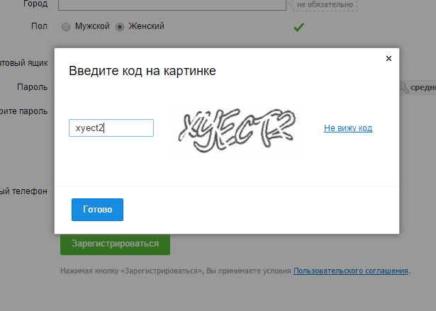

Все таки CAPTCHA порой бывает очень полезной. Не знаю как на счет десктоп приложений, но для Web данная систем защита на сегодняшний день жизненно необходима. Но порой требуется создать некоторый аналог CAPTCHA и в приложении Windows. Давайте посмотрим как это сделать в языке C#… Для начала создадим пустой проект WinForm и добавим на нашу свежеиспеченную форму элементы PictureBox, TextBox и два элемента Button. В коде проекта в класс Form1 добавим строку:
private string text = String.Empty;
Лень изменять стандартные имена, поэтому оговорим сразу что button1 будет отвечать за обновление картинки, а button2 за проверку ввода.
Теперь нужно написать функцию генерации изображения со случайным текстом. Это сможет сделать следующий код:
private Bitmap CreateImage(int Width, int Height)
{
Random rnd = new Random();
//Создадим изображение
Bitmap result = new Bitmap(Width, Height);
//Вычислим позицию текста
int Xpos = rnd.Next(0, Width - 50);
int Ypos = rnd.Next(15, Height - 15);
//Добавим различные цвета
Brush[] colors = { Brushes.Black,
Brushes.Red,
Brushes.RoyalBlue,
Brushes.Green };
//Укажем где рисовать
Graphics g = Graphics.FromImage((Image)result);
//Пусть фон картинки будет серым
g.Clear(Color.Gray);
//Сгенерируем текст
text = String.Empty;
string ALF = "1234567890QWERTYUIOPASDFGHJKLZXCVBNM";
for (int i = 0; i < 5; ++i)
text += ALF[rnd.Next(ALF.Length)];
//Нарисуем сгенирируемый текст
g.DrawString(text,
new Font("Arial", 15),
colors[rnd.Next(colors.Length)],
new PointF(Xpos, Ypos));
//Добавим немного помех
/////Линии из углов
g.DrawLine(Pens.Black,
new Point(0, 0),
new Point(Width - 1, Height - 1));
g.DrawLine(Pens.Black,
new Point(0, Height - 1),
new Point(Width - 1, 0));
////Белые точки
for (int i = 0; i < Width; ++i)
for (int j = 0; j < Height; ++j)
if (rnd.Next() % 20 == 0)
result.SetPixel(i, j, Color.White);
return result;
}
Вызовем данную функцию из события загрузки формы и события нажатия на кнопку button1:
private void Form1_Load(object sender, EventArgs e)
{
pictureBox1.Image = this.CreateImage(pictureBox1.Width, pictureBox1.Height);
}
private void button1_Click(object sender, EventArgs e)
{
pictureBox1.Image = this.CreateImage(pictureBox1.Width, pictureBox1.Height);
}
На событие клика по второй кнопки повесим следующий код:
private void button2_Click(object sender, EventArgs e)
{
if (textBox1.Text == this.text)
MessageBox.Show("Верно!");
else
MessageBox.Show("Ошибка!");
}
Конечно, хранить сгенерированный текст в открытом виде не парвильно, но данная статья является наглядным примером реализации самой процедуры CAPTCHA теста, поэтому о защите мы говорить не будем.
Так же стоит заметить что данный код будет чувствителен к ригистру, поэтому все символы нужно будет вбивать большими буквами.
З.Ы. Самый простой способ защититься - это хранить, например, MD5 хэш сгенерированного текста.
Вообщем думаю смысл понятен. Дальше можно усложнить и защитить Вашу CAPTCHA как хотите. Если есть нужна, могу привести простой пример реализации CAPTCHA на PHP. Пишите в комментариях.
Запись опубликована в рубрике C# с метками C#, CAPTCHA, Пример. Добавьте в закладки постоянную ссылку.

Сложная капча
private int captchaAttempts = 0;
private string captchaText;
public MainWindow()
{
InitializeComponent();
GenerateCaptcha();
}
private void GenerateCaptcha()
{
captchaText = GenerateRandomText(6);
Bitmap bmp = new Bitmap(200, 50);
using (Graphics g = Graphics.FromImage(bmp))
{
g.Clear(System.Drawing.Color.White);
Random rand = new Random();
for (int i = 0; i < 200; i++)
{
int x = rand.Next(bmp.Width);
int y = rand.Next(bmp.Height);
bmp.SetPixel(x, y, System.Drawing.Color.FromArgb(rand.Next(255), rand.Next(255), rand.Next(255)));
}
System.Drawing.Pen pen = new System.Drawing.Pen(System.Drawing.Color.Black, 3);
g.DrawLine(pen, 10, rand.Next(20, 50), 180, rand.Next(20, 50));
SolidBrush brush = new SolidBrush(System.Drawing.Color.Black);
System.Drawing.FontFamily fontFamily = new System.Drawing.FontFamily("Arial");
System.Drawing.Font font = new System.Drawing.Font(fontFamily, 20);
PointF pointF = new PointF(10, 10);
g.DrawString(captchaText, font, brush, pointF);
imge.Source = BitmapToImageSource(bmp);
}
}
private string GenerateRandomText(int length)
{
const string chars = "ABCDEFGHIJKLMNOPQRSTUVWXYZabcdefghijklmnopqrstuvwxyz0123456789";
Random rand = new Random(); // Создаем экземпляр класса Random
return new string(Enumerable.Repeat(chars, length)
.Select(s => chars[rand.Next(chars.Length)]).ToArray()); // Используем rand.Next(chars.Length) для выбора случайного символа из строки
}
private ImageSource BitmapToImageSource(Bitmap bitmap)
{
using (MemoryStream memory = new MemoryStream())
{
bitmap.Save(memory, System.Drawing.Imaging.ImageFormat.Bmp);
memory.Position = 0;
BitmapImage bitmapimage = new BitmapImage();
bitmapimage.BeginInit();
bitmapimage.StreamSource = memory;
bitmapimage.CacheOption = BitmapCacheOption.OnLoad;
bitmapimage.EndInit();
return bitmapimage;
}
}